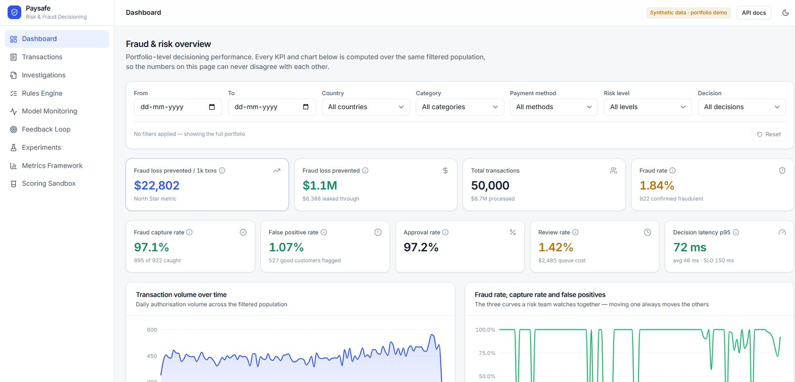

Paysafe
A payment fraud decisioning platform, built around one number: fraud loss prevented per $1K of transactions.
- Type
- Self-directed product case study
- Domain
- Fintech · Risk · ML
- Owned
- Strategy · PRD · Metrics · Build
- Stack
- Next.js · FastAPI · PostgreSQL · XGBoost

02 / Paysafe, fraud and risk overviewSynthetic data, portfolio demo
Fraud tooling optimises the wrong thing
Risk systems are usually judged on model accuracy. Accuracy is the wrong objective: a model that blocks everything is accurate about fraud and catastrophic for the business. The tension is not fraud versus no fraud. It is fraud loss against declined good customers, and the two are priced very differently.
So the product question was not “how good is the model” but “what is this decision worth, in money, and who has to defend it.”
Every decision has to be explainable to a human reviewer, after the fact.
Fraud loss prevented per $1,000 of transactions.
One metric, denominated in money, that moves in the right direction only when both halves of the trade-off improve. Accuracy can rise while this falls, which is exactly the failure mode a fraud team needs to see.
I supported it with three tiers underneath: decision-quality metrics for whether the calls were right, operational metrics for whether the review queue was survivable, and risk guardrails that would stop a release regardless of how good the headline looked.
01
Decision quality
Precision and recall at the chosen threshold, read as approve, review and decline rates rather than as a confusion matrix.
02
Operational
Review queue volume. A model that sends 40% of traffic to manual review has not made a decision, it has deferred one.
03
Guardrail
False-decline rate on good customers, and feature-distribution drift. Either can veto a release on its own.
Three signals, one score, three outcomes
The scoring engine is configurable from 0 to 100 and combines an ML probability from an XGBoost model, a 14-rule policy engine, and behavioural signals. It resolves to one of three decisions: approve, review, or decline.
Keeping the policy engine alongside the model was a deliberate product decision, not a technical hedge. Rules are how a risk team encodes a regulatory obligation or a fraud pattern they learned yesterday, things a model retrained monthly cannot express in time.
The three-way output matters as much as the score. Binary approve/decline forces every uncertain case into a wrong answer; a review band gives the uncertainty somewhere to go, at a known operational cost.
41 REST endpoints, documented through OpenAPI so the contract is readable without reading the implementation.
- 0 to 100
- Configurable risk score
- 14
- Policy rules
- 41
- REST endpoints
- 3
- Decision outcomes
Numbers that cannot disagree with each other
Every KPI and every chart on the overview is computed over the same filtered population. Change the date range or the country and the whole page moves together. That reads like an implementation detail and is actually the difference between a dashboard a risk team trusts and one they quietly stop opening.
The failure it prevents is specific. A headline metric filtered one way, a chart filtered another, and an argument in a review meeting that nobody in the room can settle. Once two numbers on the same screen disagree once, every number on that screen becomes suspect, and the team goes back to running their own queries.
Two smaller decisions are visible on the same surface. Review rate carries its queue cost in currency, because a review is a decision deferred at a price and the price belongs next to it. And latency is shown at p95 against an explicit SLO rather than as an average, because in a payments path the average is fine right up until it is not.
Dashboard, Transactions, Investigations, Rules Engine, Model Monitoring, Feedback Loop, Experiments, Metrics Framework, Scoring Sandbox.
Proving the ML earned its complexity
I designed a synthetic A/B experiment comparing rules-only decisioning against rules plus ML, evaluated on both statistical significance and economic impact. The second half of that sentence is the point: a statistically significant improvement that moves fraud loss by a rounding error is not a reason to add a model to a payments path.
For explainability I implemented TreeSHAP at the transaction level, so any single decision can be reconstructed and defended. For drift, Population Stability Index monitoring on feature distributions, the early warning that a model is being asked about a population it was not trained on.
The decision rule was fixed before the run: the ML arm had to beat rules-only on economic impact, not merely reach statistical significance. A significant result that moves fraud loss by a rounding error is not a reason to put a model in a payments path.
What shipped alongside the code
PRD, personas, user journeys, acceptance criteria, roadmap, prioritisation and a metrics framework, ending in an engineering handoff. Building the thing myself was useful mainly because it made the handoff document honest. The estimates had to survive contact with the implementation.
The fraud analyst working the review queue, not the data scientist tuning the model.
Multi-agent research that turns market signal into product decisions.